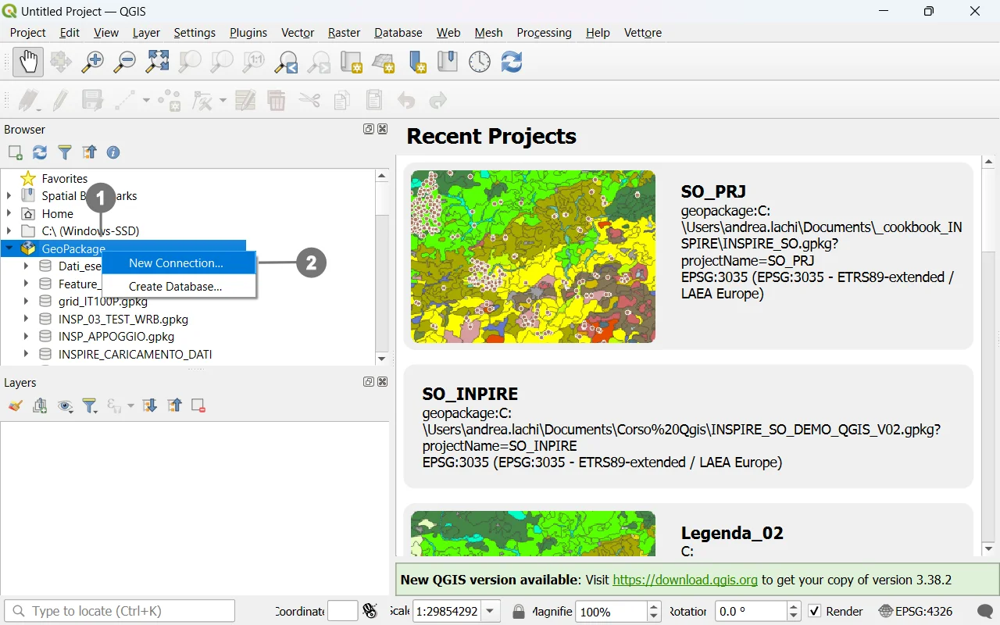
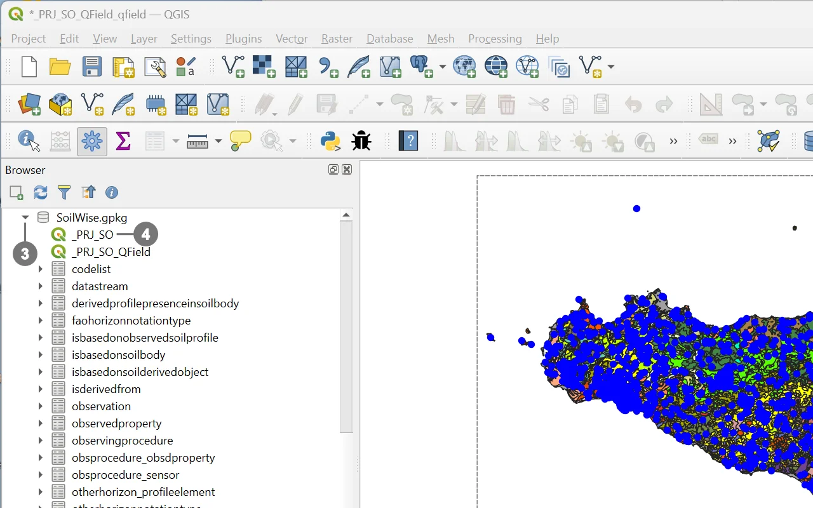

The SoilWise GeoPackage contains an embedded QGIS project named _PRJ_SO that exposes preconfigured custom forms to guide users in data entry and visualization
This capability is available even in the “empty” GeoPackage, providing a consistent, ready‑to‑use working environment from the very beginning.
From a technical standpoint, the QGIS project is stored directly inside the GeoPackage in the qgis_projects table; each project is saved as textual content representing a QGZ archive (a zipped package) which, in turn, contains the .qgs project file in XML format 12. This ensures that the project and the data live in the same .gpkg file, preserving styles, layouts, views, and settings as defined by SoilWise.
Opening is one‑click: select the embedded project from the GeoPackage and the SoilWise environment loads exactly as designed, with forms, styles, and settings ready to use.
Open Qgis.


Inside the newly connected file, ③ you will
find the `_PRJ_SO` project. ④
Double-click on it, and the project will open.
Caution
Given the system’s complexity, it is strongly recommended to always use the complete project to maintain data integrity.
Loading only a subset of layers may prevent records from being saved: QGIS cannot display or manage related objects if their corresponding layers are not loaded, and due to relationships and internal database triggers, this can lead to errors or failed save operations.
Caution
The GeoPackage contains two separate QGIS project files: one customized specifically for desktop use, named _PRJ_SO, and another configured for mobile data collection with QField, named _PRJ_SO_Qfield. Although both projects can be opened and used in QGIS, the _PRJ_SO project has been explicitly designed to take full advantage of QGIS capabilities, including advanced layer configurations, customized forms, validation rules, and all desktop-oriented functionalities described in this document.
For this reason, users are strongly advised to work with the _PRJ_SO project when operating in QGIS, ensuring optimal performance and full access to the project’s intended features.
Warning
If the GeoPackage file has been renamed, the project will not load correctly.
To resolve this issue, please refer to the solutions described in the documentation How to Handle Issues Caused by Renaming the Soilwise GeoPackage